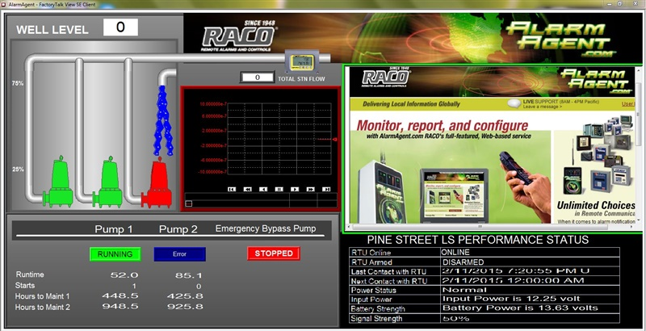
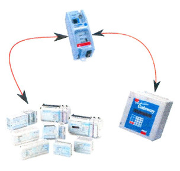
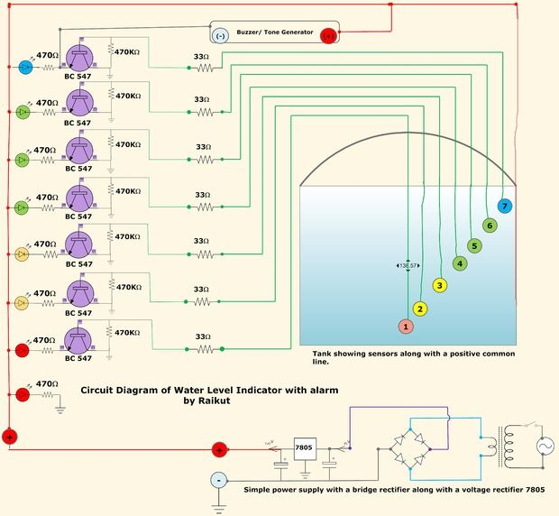

Whether by email, text or an old fashioned telephone call, we can implement a fully automated 24/7 alarm call out proceedure.

This technical note explains how to interface the RACO Verbatim Gateway system with the Allen-Bradley MicroLogix 1100 and 1400 models
This service is ideal for unmanned or undermanned processes that are required to operate round-the-clock flawlessly.
Webtronics works hard to offer customers cost effective solutions. We think "out of the box" for our customer's benefit.

This technical note explains how to interface the RACO Verbatim Gateway system with the Allen-Bradley MicroLogix 1100 and 1400 models of PLCs Via Ethernet.
Both the MicroLogix 1100 and 1400 PLC contain an Ethernet/1P port. This port along with the 1761-NET-ENI allows the Verbatim Gateway to perform its alarm notifications and monitoring functions using the existing wiring to Allen-Bradley MicroLogix 1100 and 1400 PLCs as inputs via Ethernet. This technical note is applicable for all Verbatim Gateway models.

This technical note explains how to interface the RACO Verbatim Gateway system with the Allen-Bradley MicroLogix 1100 and 1400 models
RACO-supplied components:
- Verbatim Gateway (any model)
- 51oVAB-1 Cable (NOTE: should modify cable to replace the 9 pin D-SUB with 8-pin mini din)
Allen-Bradley-supplied components:
- MicroLogix 1100 or 1400 PLC
- l76l-CBL-PMo2 (R8232 programming cable)
- 176l-NET-ENI (DFI to Ethernet protocol converter)
- copy of ENI/ENIW Utility software (available free via www.AB.com)
- either a crossover Ethernet cable or standard Ethernet cable connected through a Hub/Switch.
- RSLogix 500 software version 8.10.00
In order to facilitate Ethernet communications, RACO provides a serial cable that connects the Verbatim Gateway to the l761-NET-ENI. This cable has the RJ-45 connector required at the Verbatim Gateway end and the 8-pin mini at the other end that connects to Port 2 (R8232) of the 1761-NET-ENI card.
Once this cable is connected, only Ethernet related hardware is required.
%include {"template/footer.html"}